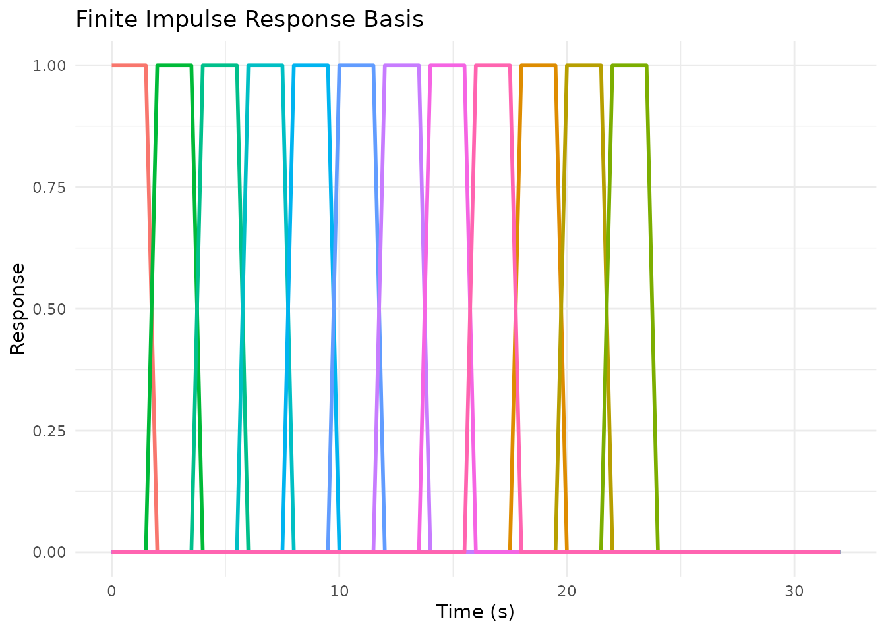

HRF Generators
Bradley R. Buchsbaum
2026-01-22
Source:vignettes/a_03_hrf_generators.Rmd
a_03_hrf_generators.RmdWhy Generators?
Most pre-defined HRFs in fmrihrf (like
HRF_SPMG1 or HRF_GAUSSIAN) are ready-to-use
objects. However, some HRFs are actually generators. A
generator is a function that creates a new HRF object when you call it.
This allows you to specify the number of basis functions
(nbasis) and the time span (span) at creation
time.
The library provides generators for flexible basis sets such as
B-splines and finite impulse response (FIR) models. They are available
through the internal HRF_REGISTRY and are also returned by
list_available_hrfs() with type “generator”.
list_available_hrfs(details = TRUE) %>%
dplyr::filter(type == "generator")
#> name type nbasis_default is_alias description
#> 1 bspline generator 5 FALSE bspline HRF (generator)
#> 2 tent generator 5 FALSE tent HRF (generator)
#> 3 fourier generator 5 FALSE fourier HRF (generator)
#> 4 daguerre generator 3 FALSE daguerre HRF (generator)
#> 5 fir generator 12 FALSE fir HRF (generator)
#> 6 lwu generator variable FALSE lwu HRF (generator)
#> 7 bs generator 5 TRUE bs HRF (generator) (alias)Creating a Basis with a Generator
To obtain an actual HRF object from a generator, simply call the generator function with your desired parameters. For example, to create a B-spline basis with 8 functions spanning 32 seconds:
# Create a B-spline basis using gen_hrf
bs8 <- gen_hrf(hrf_bspline, N = 8, span = 32)
print(bs8)
#> function (t)
#> hrf(t, ...)
#> <bytecode: 0x56273d637e88>
#> <environment: 0x56273d63ae10>
#> attr(,"class")
#> [1] "HRF" "function"
#> attr(,"name")
#> [1] "hrf_bspline"
#> attr(,"nbasis")
#> [1] 8
#> attr(,"span")
#> [1] 32
#> attr(,"params")
#> list()The returned value is a standard HRF object, so you can
evaluate it or use it in model formulas like any other HRF.
times <- seq(0, 32, by = 0.5)
mat <- bs8(times)
head(mat)
#> 1 2 3 4 5 6 7 8
#> [1,] 0.0000000 0.00000000 0.0000000000 0 0 0 0 0
#> [2,] 0.3081055 0.02164714 0.0003255208 0 0 0 0 0
#> [3,] 0.4960938 0.07942708 0.0026041667 0 0 0 0 0
#> [4,] 0.5844727 0.16259766 0.0087890625 0 0 0 0 0
#> [5,] 0.5937500 0.26041667 0.0208333333 0 0 0 0 0
#> [6,] 0.5444336 0.36214193 0.0406901042 0 0 0 0 0Visualising FIR Basis Functions
Here is a quick look at an FIR basis generated with 10 bins over a 20 second window:
# Use the pre-defined FIR basis or create one with gen_hrf
fir10 <- HRF_FIR # Pre-defined FIR with 12 basis functions
resp <- fir10(times)
fir_df <- data.frame(Time = times, resp)
fir_long <- tidyr::pivot_longer(fir_df, -Time)
ggplot(fir_long, aes(Time, value, colour = name)) +
geom_line(linewidth = 1) +
labs(title = "Finite Impulse Response Basis",
x = "Time (s)", y = "Response") +
theme_minimal() +
theme(legend.position = "none")